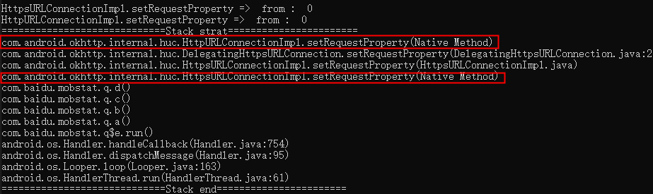

在Github上发现了一个有用的资料：
- 一个系统性讲解Frida用法和配置方法的Frida系列文章，在
笔记（二）中的两篇Frida Java Hook详解也是出自这里。
还是用之前的app实验，这次尝试分析Android自带的HttpURLConnection。
用法：
1 | // GET |
可以看到关键点在HttpURLConnection类，请求的属性和输入输出流都在这个类的对象中配置。
如果直接hook HttpURLConnection类的方法，会发现没有任何东西。
1 | var httpUrlConnection = Java.use('java.net.HttpURLConnection'); |
打开源码，发现HttpURLConnection为抽象类，在源码中搜索extends HttpURLConnection，找到其实现类：com.android.okhttp.internal.huc.HttpURLConnectionImpl。
（搜索源码：https://cs.android.com/ ）
1 | var HttpURLConnectionImpl = Java.use('com.android.okhttp.internal.huc.HttpURLConnectionImpl'); |
结果如图：
https请求的实现在com.android.okhttp.internal.huc.HttpsURLConnectionImpl, hook逻辑与HttpURLConnectionImpl相同，把类替换掉就可以了。这样以来代码中出现了大量重复，看下能不能将https请求和http请求的hook合并。
分析源码我们可以发现，HttpsURLConnectionImpl继承了抽象类DelegatingHttpsURLConnection,而DelegatingHttpsURLConnection继承自HttpsURLConnection，再往下，HttpsURLConnection又继承自HttpURLConnection。
打印下调用栈，看https请求的具体实现是否使用了com.android.okhttp.internal.huc.HttpURLConnectionImpl的相关接口。
打印调用栈：
1 | function printStack() { |
或
1 | console.log(Java.use("android.util.Log").getStackTraceString(Java.use("java.lang.Throwable").$new())); |
如图，可以看到HttpURLConnectionImpl.setRequestProperty()方法最终调用了HttpURLConnectionImpl.setRequestProperty。

可以直接简化掉一半代码。
上文中hook到的都是请求的相关配置，通信的数据是由InputStream和OutputStream数据流传递。connection.getOutputStream()向服务端发送数据，connection.getInputStream()从服务端接收数据。
1 | var getInputStream_http = HttpURLConnectionImpl.getInputStream; |
由于var returnStream = getInputStream_http.call(this);得到的只是一个InputStream数据流对象，需要解析InputStream为String：
1 | function readInputStream(inputStream){ |
结果如下图：

部分数据还存在乱码问题，后面需要想办法解决这个问题。